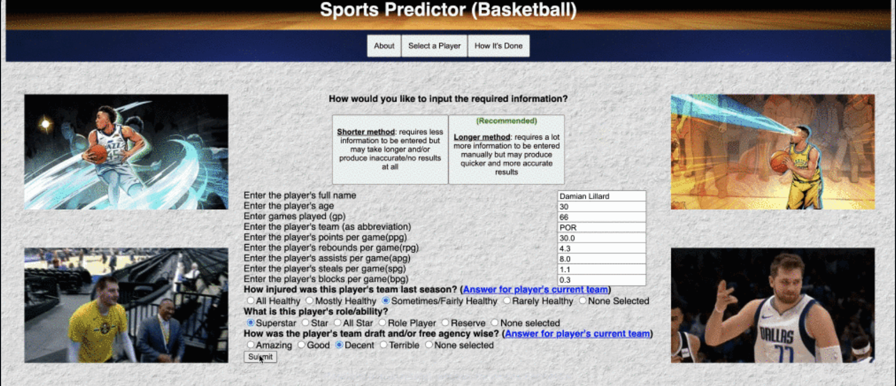

PROJECTS
Text File Word Counter
A Java program that can determine and output the word count of each word in a text file. With a maximum of 20 threads (one for each file), multithreading via the Executor Service API allows for quicker execution.

GitHub
Basketball Predictor
Application that determines a player's future statistics based on details from the most completed season. Includes the use of 2 api's and a graph data structure. Created both as a React application (with TypeScript and Redux) and basic application using HTML/CSS/Javascript.
Python Complexity Tracer
A Java program that can trace and determine the time complexity of a function in a python file. Implemented using stacks and file scanners.